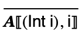

4 Abscond: a language of numbers
Let’s Make a Programming Language!
4.1 Overview
A compiler is just one (optional!) component of a programming language. So if you want to make a compiler, you must first settle on a programming language to compile.
The specification of a programming language consists of two parts: the syntax, which specifies the form of programs, and semantics, which specifies the meaning of programs.
Syntax, while important, is a fairly superficial aspect of programming languages. The real heart of a programming language is its semantics and we will spend more time concerned this aspect.
There are a few common ways a language’s meaning is specified:
By example.
By informal description.
By reference to an implementation, often an interpreter.
By formal (mathematical) definition.
Each approach has its advantages and disadvantages. Examples are concise and unambiguous, but incomplete. Informal (prose) descriptions can be intuitive, but open to interpretation and ambiguity. Reference implementations provide precise, executable specifications, but may over specify language details by tying them to implementation artifacts. Formal definitions balance precision while allowing for under-specification, but require detailed definitions and training to understand.
We will use a combination of each.
To begin, let’s start with a dead simple programming language called Abscond. The only kind of expression in Abscond are integer literals. Running an abscond program just produces that integer. (Told you it was simple.)
4.2 Concrete syntax for Abscond
We will simplify matters of syntax by using the Lisp notation of s-expression for the concrete form of program phrases. The job of a parser is to construct an abstract syntax tree from the textual representation of a program. We will consider parsing in two phases:
the first converts a stream of textual input into an s-expression, and
the second converts an s-expression into an instance of a datatype for representing expressions called an AST.
For the first phase, we rely on the read function to take care of converting strings to s-expressions. In order to parse s-expressions into ASTs, we will write fairly straightforward functions that convert between the representations.
Abscond, like the other languages studied in this course, is designed to be a subset of Racket. This has two primary benefits:
the Racket interpreter and compiler can be used as a reference implementation of the languages we build, and
there are built-in facilities for reading and writing data in the parenthezised form that Racket uses, which we can borrow to make parsing easy.
The concrete form of an Abscond program will consist of, like Racket, the line of text:
#lang racket |
followed by a (concrete) expression. The grammar of expressions is very simple:
So, 0, 120, -42, etc. are concrete Abscond expressions and a complete Abscond program looks like this:
#lang racket 42
Reading Abscond programs from ports, files, strings, etc. consists of reading (and ignoring) the #lang racket line and then using the read function to parse the concrete expression as an s-expression.
4.3 Abstract syntax for Abscond
While not terribly useful for a language as overly simplistic as Abscond, we use an AST datatype for representing expressions and another syntactic categories. For each category, we will have an appropriate constructor. In the case of Abscond all expressions are integers, so we have a single constructor, Int.

A datatype for representing expressions can be defined as:
#lang racket (provide Int) ;; type Expr = (Int Integer) (struct Int (i) #:prefab)
#lang racket (provide parse) (require "ast.rkt") ;; S-Expr -> Expr (define (parse s) (match s [(? integer?) (Int s)] [_ (error "Parse error")]))
4.4 Meaning of Abscond programs
The meaning of an Abscond program is simply the number itself. So (Int 42) evaluates to 42.
We can write an “interpreter” that consumes an expression and produces it’s meaning:
#lang racket (provide interp) (require "ast.rkt") ;; Expr -> Integer ;; Interpret given expression (define (interp e) (match e [(Int i) i]))
> (interp (Int 42)) 42
> (interp (Int -8)) -8
We can add a command line wrapper program for interpreting Abscond programs saved in files:
#lang racket (provide main) (require "parse.rkt" "interp.rkt") ;; String -> Void ;; Parse and interpret contents of given filename, ;; print result on stdout (define (main fn) (let ([p (open-input-file fn)]) (begin (read-line p) ; ignore #lang racket line (println (interp (parse (read p)))) (close-input-port p))))
The details here aren’t important (and you won’t be asked to write this kind of code), but this program reads the contents of a file given on the command line. If it’s an integer, i.e. a well-formed Abscond program, then it runs the intepreter and displays the result.
shell
> racket -t interp-file.rkt -m 42.rkt 42
Even though the semantics is obvious, we can provide a formal definition of Abscond using operational semantics.
An operational semantics is a mathematical definition that characterizes the meaning of programs. We will defined the semantics of Abscond as a binary relation between programs and their meanings. So in the setting of Abscond, this binary relation will be a set of pairs of expressions and integers. This relation will be defined inductively using inference rules. For such a simple language, just a single inference rule suffices:

Here, we are defining a binary relation, called
 , and saying every integer literal
expression is paired with the integer itself in the
relation. So ((Int 2),2) is in
, and saying every integer literal
expression is paired with the integer itself in the
relation. So ((Int 2),2) is in  ,
((Int 5),5) is in
,
((Int 5),5) is in  , and so on.
, and so on.
The inference rules define the binary relation by defining the evidence for being in the relation. The rule makes use of meta-variables drawn from the non-terminals of the language grammar. A pair is in the relation if you can construct an instance of the rule (substituting some integer for i) in the rule.
(This part probably seems opaque at the moment, but it will become clearer as we work through more examples, so don’t worry.)
The operational semantics defines the meaning of Abscond programs. The intepreter computes that meaning. We can view the semantics as a specification, and the interpreter as an implementation.
Characterizing the correctness of the interpreter boils down to the following statement:
Interpreter Correctness: For all expressions e
and integers i, if (e,i) in  , then (interp e) equals i.
, then (interp e) equals i.
We now have a complete (if overly simple) programming language with an operational semantics and an interpreter, which is (obviously) correct. Now let’s write a compiler.
4.5 Toward a Compiler for Abscond
A compiler, like an interpreter, is an implementation of a programming language. The key difference is that a compiler stages the work of interpreting a program into two phases. The first translates the original program (the source language) into a program in another programming language (the target language). The second runs this program. These phases, often called compile-time and run-time. The program that does the translation is the compiler. The program that does the running of the translated program is the run-time system.
So in general, the relationship between an interpreter and compiler is
(source-interp e) = (target-interp (source-compile e)) |
We can in principle choose any target language we’d like. For this class, we will choose the x86-64 instruction set architecture.
There are several reasons for this choice:
it is a low-level language, so compiling from a high-level language to x86-64 will require building everything from scratch,
it is the programming language at the “bottom” of your computer; it’s interpreter is implemented in hardware on your computer’s CPU,
it is one of the two dominant computing architectures (the other being ARM), and
it is a mature technology with good tools and materials.
So our compiler will emit x86 assembly code. To make our lives a bit easier, we will write the run-time system in C. Let’s start with the Abscond runtime:
#include <stdio.h> #include <inttypes.h> #include "print.h" int64_t entry(); int main(int argc, char** argv) { int64_t result; result = entry(); print_result(result); putchar('\n'); return 0; }
This C program provides the main entry point for running an Abscond program. It relies upon a function print_result which is defined as follows:
#ifndef PRINT_H #define PRINT_H void print_result(int64_t); #endif
#include <stdio.h> #include <inttypes.h> void print_result(int64_t x) { printf("%" PRId64, x); }
Separating out print_result, which at this point is just a simple printf statement, seems like overkill, but it will be useful in the future as the language gets more complicated.
The runtime must be linked against an object file that provides the definition of entry; this is the code our compiler will emit.
The entry function computes the result of running the Abscond code, i.e. an integer. Here we are taking advantage of the x86-64 architecture by using 64-bit signed integers by using the int64_t C type.
The runtime system calls the function and prints the result.
We can compile the run-time system to get an object file. We’ll use gcc for compiling C:
shell
> gcc -m64 -c -o main.o main.c
shell
> gcc -m64 -c -o print.o print.c
This creates main.o and print.o; linking these file together with an object file that contains entry will produce an executable that, when run, will carry out the execution of an Abscond program.
4.6 An Example
Before trying to write the Abscond compiler, let’s first make an example of what we would like the compiler to produce for a particular example. Let’s say the Abscond program is 42. What should the assembly code for this program look like? Here we have to learn a bit about the x86-64 assembly language.
default rel section .text global _entry _entry: mov rax, 42 ret
Note: on macOS, labels must be prepended with _, while on Linux they are not; e.g. _entry vs entry.
Above is a x86-64 program, written in NASM syntax. We will be using nasm as our assembler in this class because it is widely used and available on most platforms.
The first line declares a global label (entry), an entry point in to the code below.
The next line declares the start of a section of code consisting of textual instructions.
The third line contains the entry label, i.e. the start of the entry code. When the run-time systems calls entry, it will jump to this point in the code.
The fourth line is an instruction to move the integer literal 42 into the rax register. By convention, whatever is in the rax register when code returns control to the caller will hold the return value.
The final line is an instruction to return control to the caller.
To assemble this program into an object file, we can run the nasm assembler:
shell
> nasm -f macho64 -o 42.o 42.s
Note: on macOS, the format option -f should be macho64; on Linux it should be elf64.
This creates 42.o, an object file containing the instructions above (in binary format).
We can link this file with the run-time to produce an executable file:
shell
> gcc main.o print.o 42.o -o 42.run
This creates the file 42.run, an exectuable program:
shell
> ./42.run 42
We now have a working example. The remaining work will be to design a compiler that takes an Abscond program and emits a file like 42.s, but with the appropriate integer literal.
4.7 A Compiler for Abscond
We will now write a compiler for Abscond. To heart of the compiler will be a function with the following signature:
; Expr -> Asm (define (compile e) ...)
Where Asm is a data type for representing assembly programs, i.e. it will be the AST of x86-64 assembly.
So the AST representation of our example is:
(list (Label 'entry) (Mov 'rax 42) (Ret))
Writing the compile function is easy:
#lang racket (provide compile) (require "ast.rkt" a86/ast) ;; Expr -> Asm (define (compile e) (prog (Global 'entry) (Label 'entry) (compile-e e) (Ret))) ;; Expr -> Asm (define (compile-e e) (match e [(Int i) (seq (Mov 'rax i))]))
> (compile (Int 42))
(list
(Global 'entry)
(Label 'entry)
(Mov 'rax 42)
(Ret))
> (compile (Int 38))
(list
(Global 'entry)
(Label 'entry)
(Mov 'rax 38)
(Ret))
To convert back to the concrete NASM syntax, we use asm-string.
Note: the printer takes care of the macOS vs Linux label convention by detecting the underlying system and printing appropriately.
> (displayln (asm-string (compile (Int 42))))
default rel
section .text
global _entry
_entry:
mov rax, 42
ret
Putting it all together, we can write a command line compiler much like the command line interpreter before, except now we emit assembly code:
#lang racket (provide main) (require "parse.rkt" "compile.rkt" a86/printer) ;; String -> Void ;; Compile contents of given file name, ;; emit asm code on stdout (define (main fn) (let ((p (open-input-file fn))) (begin (read-line p) ; ignore #lang racket line (displayln (asm-string (compile (parse (read p))))) (close-input-port p))))
Example:
shell
> racket -t compile-file.rkt -m 42.rkt default rel section .text global _entry _entry: mov rax, 42 ret
Using a Makefile, we can capture the whole compilation dependencies as:
Note: the appropriate object file format is detected based on the operating system.
UNAME := $(shell uname) .PHONY: test ifeq ($(UNAME), Darwin) format=macho64 else format=elf64 endif objs = \ main.o \ print.o default: runtime.o runtime.o: $(objs) ld -r $(objs) -o runtime.o %.run: %.o runtime.o gcc runtime.o $< -o $@ .c.o: gcc -fPIC -c -g -o $@ $< .s.o: nasm -g -f $(format) -o $@ $< %.s: %.rkt racket -t compile-file.rkt -m $< > $@ clean: rm *.o *.s *.run test: example.run @test "$(shell ./example.run)" = "$(shell racket example.rkt)"
And now compiling Abscond programs is easy-peasy:
shell
> make 42.run ld -r main.o print.o -o runtime.o gcc runtime.o 42.o -o 42.run > ./42.run 42
It’s worth taking stock of what we have at this point, compared to the interpreter approach. To run the interpreter requires all of Racket in the run-time system.
When running a program using the interpreter, we have to parse the Abscond program, check the syntax of the program (making sure it’s an integer), then run the interpreter and print the result.
When running a program using the compiler, we still have to parse the Abscond program and check its syntax, but this work happens at compile-time. When we run the program this work will have already been done. While the compiler needs Racket to run, at run-time, Racket does not need to be available. All the run-time needs is our (very tiny) object file compiled from C. Racket doesn’t run at all – we could delete it from our computer or ship the executable to any compatible x86-64 machine and run it there. This adds up to much more efficient programs. Just to demonstrate, here’s a single data point measuring the difference between interpreting and compiling Abscond programs:
shell
> time -p racket -t interp-file.rkt -m 42.rkt 42 real 0.59 user 0.48 sys 0.09
Compiling:
shell
> time -p ./42.run 42 real 0.00 user 0.00 sys 0.00
Because Abscond is a subset of Racket, we can even compare results against interpreting the program directly in Racket:
shell
> touch 42.rkt # forces interpreter to be used > time -p racket 42.rkt 42 real 0.37 user 0.28 sys 0.07
Moreover, we can compare our compiled code to code compiled by Racket:
shell
> raco make 42.rkt > time -p racket 42.rkt 42 real 0.30 user 0.22 sys 0.06
4.8 But is it Correct?
At this point, we have a compiler for Abscond. But is it correct?
Here is a statement of compiler correctness:
Compiler Correctness: For all expressions e and
integers i, if (e,i) in  , then (asm-interp (compile e)) equals
i.
, then (asm-interp (compile e)) equals
i.
Ultimately, we want the compiler to capture the operational semantics of our language (the ground truth of what programs mean). However, from a practical stand-point, relating the compiler to the intepreter may be more straightforward. What’s nice about the interpreter is we can run it, so we can test the compiler against the interpreter. Moreover, since we claimed the interpreter is correct (w.r.t. to the semantics), testing the compiler against the interpreter is a way of testing it against the semantics, indirectly. If the compiler and interpreter agree on all possible inputs, then the compiler is correct with respect to the semantics since it is equivalent to the interpreter, and the interpreter is correct.
So, in this setting, means we have the following equivaluence:
(interp e) equals (asm-interp (compile e)) |
But we don’t actually have asm-interp, a function that interprets the Asm code we generate. Instead we printed the code and had gcc assembly and link it into an executable, which the OS could run. But this is a minor distinction. We can use asm-interp to interact with the OS to do all of these steps.
This is actually a handy tool to have for experimenting with compilation within Racket:
> (asm-interp (compile (Int 42))) 42
> (asm-interp (compile (Int 37))) 37
> (asm-interp (compile (Int -8))) -8
This of course agrees with what we will get from the interpreter:
> (interp (Int 42)) 42
> (interp (Int 37)) 37
> (interp (Int -8)) -8
> (define (check-compiler e) (check-eqv? (interp e) (asm-interp (compile e)))) > (check-compiler (Int 42)) > (check-compiler (Int 37)) > (check-compiler (Int -8))
This is a powerful testing technique when combined with random generation. Since our correctness claim should hold for all Abscond programs, we can randomly generate any Abscond program and check that it holds.
> (check-compiler (Int (random 100)))
> (for ([i (in-range 10)]) (check-compiler (Int (random 10000))))
The last expression is taking 10 samples from the space of Abscond programs in [0,10000) and checking the compiler correctness claim on them. If the claim doesn’t hold for any of these samples, a test failure would be reported.
Finding an input to check-compiler that fails would refute the compiler correctness claim and mean that we have a bug. Such an input is called a counter-example.
On the other hand we gain more confidence with each passing test. While passing tests increase our confidence, we cannot test all possible inputs this way, so we can’t be sure our compiler is correct by testing alone. To really be sure, we’d need to write a proof, but that’s beyond the scope of this class.
At this point we have not found a counter-example to compiler correctness. It’s tempting to declare victory. But... can you think of a valid input (i.e. some integer) that might refute the correctness claim?
Think on it. In the meantime, let’s move on.